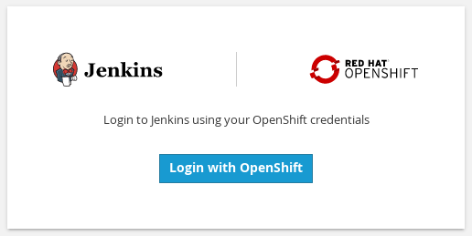

CI/CD Defined
In modern software projects many teams utilize the concept of Continuous Integration (CI) and Continuous Delivery (CD). By setting up a tool chain that continuously builds, tests, and stages software releases a team can ensure that their product can be reliably released at any time. OpenShift can be an enabler in the creation and management of this tool chain.
In this lab we walk through creating a simple example of a CI/CD pipeline utlizing Jenkins, all running on top of OpenShift! The Jenkins job will trigger OpenShift to build and deploy a test version of the application, validate that the deployment works, and then tag the test version into production.
In the steps below replace 'YOUR#' with your student number.
Create a new project
Create a new project named “cicd-YOUR#”.
$ oc new-project cicd-YOUR#
Browse to original landing page, and click "New Project".
Fill in the Name and Display Name of the project as "cicd-YOUR#" and click "Create"
Use the cicd-YOUR# project
$ oc project cicd-YOUR#
Instantiate a Jenkins server in your project
$ oc new-app jenkins-ephemeral
Click "Add to Project", select "Browse Catalog" tab and filter on "jenkins". Then select "Jenkins (Ephemeral)".
Scroll to the bottom of this page and click "Create"
Select "Continue to overview" to display the following overview page.
Create a sample application configuration
Use the "oc new-app" command to create a simple nodejs application from a template file:
$ oc new-app -f https://raw.githubusercontent.com/openshift/origin/master/examples/jenkins/application-template.json
Click on "Overview" within the OpenShift console to display the sample application configuration
Manage and view a Jenkins build
Access Jenkins
Get the route to the Jenkins server
$ oc get route
NAME HOST/PORT PATH SERVICES PORT TERMINATION WILDCARD
frontend frontend-cicd.192.168.42.27.xip.io frontend <all> edge None
jenkins jenkins-cicd.192.168.42.27.xip.io jenkins <all> edge/Redirect None
Use Jenkins HOST/PORT to access through web browser
Click the URL that is listed in the jenkins header
Select "Login with OpenShift" from Jenkins login page

The OpenShift login page is displayed in a new browser tab.
Login with your OpenShift user name and password

Once logged in you should see the Jenkins console
In the Jenkins console, open the "OpenShift Sample" menu and select "Configure"
You'll see a series of Jenkins build steps defined. These build steps are from the Jenkins plugin for Openshift. Refer to the OpenShift Jenkins plugin documentation for details on the various functionality provided.
The default values for each of the various build steps listed for the sample job are sufficient for our demonstration. Click "Save" to save the job settings and the Project OpenShift Sample page will be displayed.
Select "Build Now" from the Jenkins console and note the Build History pane updating
Hover over the build number of the current build, for example "#1", open the drop down menu and select "Console Output"
The Jenkins build has triggered an OpenShift build of the application. Jenkins waits for the build to result in a deployment and then confirms the new deployment works. If so, Jenkins "tags" the image for production. This tagging will trigger another deployment, this time creating/updating the production service FRONTEND-PROD.
Confirm both the test and production services are available
Browse to both services
Use the "oc get service" command to get the internal IP and port needed to access the frontend and frontend-prod services:
$ oc get services -n cicd-YOUR# | grep frontend
frontend 172.30.151.206 <none> 8080/TCP 40m
frontend-prod 172.30.230.228 <none> 8080/TCP 40m
Use IPs and ports to access services through web browser
Select services' links from Overview page.
Service web page displayed:

Summary
In this lab you have very quickly and easily constructed a basic Build/Test/Deply pipeline. Although our example was very basic it introduces you to a powerful DevOps feature of OpenShift through the leveraging of Jenkins. This can be extended to support complex real-world continuous delivery requirements. Read more about the use of Jenkins on OpenShift here and more about Jenkins here.